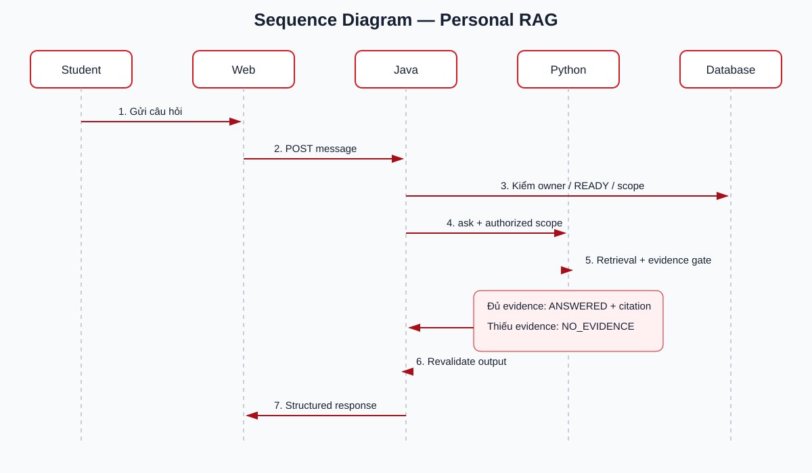

1. Use Case tổng quát
PDF trang 19, mục 2.3.1; Markdown Hình 2.1.
Hình dưới mô tả các tác nhân, bước xử lý và điểm kiểm soát của chức năng.

Ba actor chỉ tham gia các chức năng thuộc vai trò. Đường nối là association, không phải trình tự; đường vô hình trong nguồn chỉ dùng dàn trang.
SVG · PNG · Nguồn Mermaid


2. Use Case Student
PDF trang 19, mục 2.3.2; Markdown Hình 2.2.
Hình dưới mô tả các tác nhân, bước xử lý và điểm kiểm soát của chức năng.

Personal RAG, Slide Tutor, sinh Quiz là ba mục tiêu độc lập. Student chủ động review và lập lịch, Dashboard hiển thị đầy đủ tiến độ.
SVG · PNG · Nguồn Mermaid


3. Use Case Teacher
PDF trang 20, mục 2.3.3; Markdown Hình 2.3.
Hình dưới mô tả các tác nhân, bước xử lý và điểm kiểm soát của chức năng.

Teacher tạo lớp và duyệt enrollment trong phạm vi sở hữu. Không có Teacher Quiz hoặc quyền đọc học tập riêng của Student.
SVG · PNG · Nguồn Mermaid


4. Use Case Admin
PDF trang 20, mục 2.3.4; Markdown Hình 2.4.
Hình dưới mô tả các tác nhân, bước xử lý và điểm kiểm soát của chức năng.

Admin quản trị tài khoản, danh mục và vận hành; không phân công lớp hoặc chấm Quiz cá nhân.
SVG · PNG · Nguồn Mermaid


5. Tham gia lớp và học liệu
PDF trang 24; Markdown Hình 2.5.
Hình dưới mô tả các tác nhân, bước xử lý và điểm kiểm soát của chức năng.

PENDING chỉ được học sau APPROVED. Java kiểm quyền mỗi lần truy cập. PDF chỉ download, PPTX chỉ xem web; lớp ARCHIVED áp dụng quyền lịch sử theo policy API.
SVG · PNG · Nguồn Mermaid

6. Learning Events, Daily Goal và Study Streak
PDF trang 27; Markdown Hình 2.10.
Hình dưới mô tả các tác nhân, bước xử lý và điểm kiểm soát của chức năng.

Chỉ VIEW_SLIDE, STUDY_TASK_COMPLETED, QUIZ_COMPLETED tạo ngày Streak. Java tính theo ngày và múi giờ; không cần hoàn thành 100% Daily Goal.
SVG · PNG · Nguồn Mermaid

7. Kế hoạch và Lịch tuần
Bổ sung mục 2.4.1; Markdown Hình 2.11.
Hình dưới mô tả các tác nhân, bước xử lý và điểm kiểm soát của chức năng.

Student tự thêm task/lịch, Java kiểm owner và xung đột. Không có AI tự điều phối kế hoạch.
SVG · PNG · Nguồn Mermaid

8. Sequence Personal RAG
PDF trang 30; Markdown Hình 2.12.
Hình dưới mô tả các tác nhân, bước xử lý và điểm kiểm soát của chức năng.

Public message đi qua Java; chỉ scope hợp lệ mới gọi Python. Thiếu evidence không gọi LLM; rewrite giữ nguyên snapshot.
SVG · PNG · Nguồn Mermaid


9. Sequence Slide Tutor
PDF trang 28; Markdown Hình 2.13.
Hình dưới mô tả các tác nhân, bước xử lý và điểm kiểm soát của chức năng.

Endpoint hiện hành là POST /api/v1/student/materials/{documentId}/slides/{number}/tutor. Sai quyền bị từ chối trước retrieval.
SVG · PNG · Nguồn Mermaid

10. Sequence sinh Quiz
PDF trang 29; Markdown Hình 2.14.
Hình dưới mô tả các tác nhân, bước xử lý và điểm kiểm soát của chức năng.

Public API trả 202 + quizId rồi Java xử lý nền; Web poll Java. Chỉ Java lưu draft/lifecycle và kiểm destination lúc Accept.
SVG · PNG · Nguồn Mermaid

11. Sequence index Personal PDF
PDF trang 31 phần trên; Markdown Hình 2.15.
Hình dưới mô tả các tác nhân, bước xử lý và điểm kiểm soát của chức năng.

Internal index trả 202 + jobId trước worker; Java poll jobs để cập nhật READY/FAILED. Không dùng callback hoặc giữ HTTP chờ index xong.
SVG · PNG · Nguồn Mermaid

12. Kiến trúc và ranh giới dữ liệu
PDF trang 31 phần dưới; Markdown Hình 2.16.
Hình dưới mô tả các tác nhân, bước xử lý và điểm kiểm soát của chức năng.

Web chỉ gọi Java. Java sở hữu app, Python sở hữu ai; cả hai truy cập Object Storage theo trách nhiệm và scope.
SVG · PNG · Nguồn Mermaid